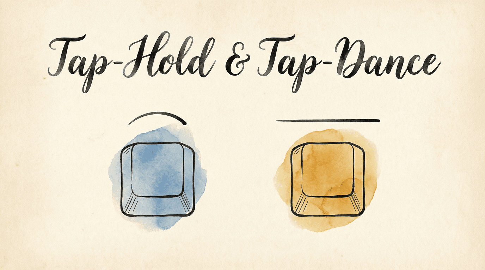
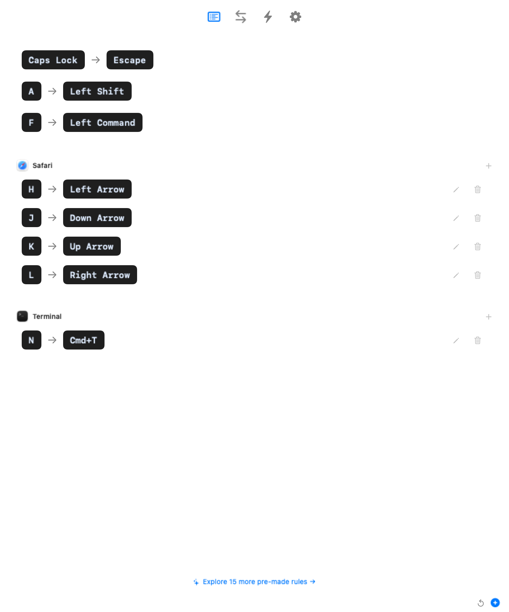
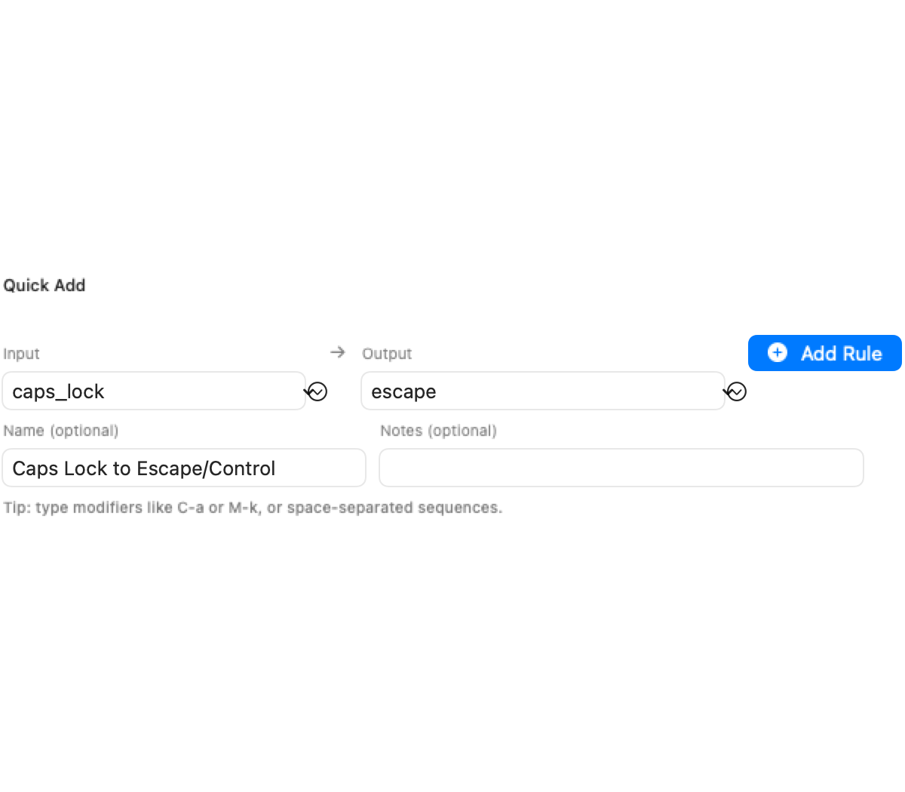

A standard keyboard gives you about 80 keys, and each one does exactly one thing. That's limiting — you run out of convenient shortcuts fast, especially if you want to launch apps, navigate, and use modifiers without leaving the home row.
KeyPath lets a single key do different things depending on how you press it:
These dual-role keys are the foundation of everything else in KeyPath: home row modifiers, app launching, navigation layers, and more.
If you're new to these ideas, start with the Keyboard Concepts page for a beginner-friendly overview.

Screenshot — Custom Rules tab with new rule form: ┌─────────────────────────────────────────────────────┐
│ Custom Rules │
│ │
│ ┌────────────────────────────────────────────────┐ │
│ │ EVERYWHERE (global rules) │ │
│ │ │ │
│ │ caps_lock ──→ escape │ │
│ │ a (hold) ──→ left_shift │ │
│ │ f (hold) ──→ left_command │ │
│ └────────────────────────────────────────────────┘ │
│ │
│ ┌────────────────────────────────────────────────┐ │
│ │ 🧭 SAFARI (app-specific rules) │ │
│ │ │ │
│ │ h ──→ left_arrow │ │
│ │ j ──→ down_arrow │ │
│ │ k ──→ up_arrow │ │
│ │ l ──→ right_arrow │ │
│ └────────────────────────────────────────────────┘ │
│ │
│ [ ↺ Reset ] [ + New Rule ] │
└─────────────────────────────────────────────────────┘
Screenshot — Rule editor with hold behavior options: ┌─────────────────────────────────────────────────────┐
│ New Rule │
│ │
│ Start key: [ caps_lock ▾ ] │
│ Finish key: [ escape ▾ ] (tap action) │
│ │
│ ┌ Hold, Double Tap, etc. ─────────────── [ON] ──┐ │
│ │ │ │
│ │ On Hold: [ left_control ▾ ] │ │
│ │ │ │
│ │ Hold Behavior: │ │
│ │ ┌──────────┐ ┌──────────┐ ┌───────────────┐ │ │
│ │ │ Basic │ │ Activate │ │ Activate hold │ │ │
│ │ │ │ │ on press │ │ after release │ │ │
│ │ └──────────┘ └──────────┘ └───────────────┘ │ │
│ │ │ │
│ │ Repeat-tap window: [ 200 ms ] │ │
│ │ Hold activation delay: [ 200 ms ] │ │
│ └────────────────────────────────────────────────┘ │
│ │
│ [ Cancel ] [ Save ] │
└─────────────────────────────────────────────────────┘caps)esc) — this is the single-tap actioncaps)Note: Hold and Tap-Dance cannot be used together on the same key. If you try to set one when the other is already configured, a dialog will ask which behavior you want to keep.
| Option | Description |
|---|---|
| Basic | Hold activates after timeout |
| Activate hold when another key is pressed | Pressing another key activates the hold action. |
| Activate hold after another key is released | Releasing another key activates the hold action. |
| Custom keys | Only specific keys trigger early tap |
Map your home row keys to modifiers when held (Mac-optimized CAGS layout):
a → a (tap) / Left Shift (hold)
s → s (tap) / Left Control (hold)
d → d (tap) / Left Option (hold)
f → f (tap) / Left Command (hold)Settings:
This allows you to press a + j quickly and it triggers Ctrl+J instead of aj.
Replace Caps Lock with Escape on tap, Control on hold:
caps → esc (tap) / lctl (hold)Settings:
Space bar that acts as Space on tap, Shift on hold:
spc → spc (tap) / lsft (hold)Settings:
Caps Lock output toggles the native macOS lock state. This recipe uses physical Caps Lock as its input, so it also needs compatible keyboard setup.
caps → esc (single tap) / caps (double tap) / lctl (triple tap)f1 → f1 (single tap) / layer-toggle function (double tap)KeyPath generates the appropriate Kanata variant based on your settings:
tap-hold-press: Hold triggers on other key press (activateHoldOnOtherKey = true)tap-hold-release: Hold activates after another key is released (quickTap = true internally)tap-hold-release-keys: Early tap on specific keys (customTapKeys non-empty)tap-hold: Basic timeout-based (default)The editors use the same names wherever the underlying clock and outcome match:
The value is always milliseconds. A longer window gives you more time to perform the required action, while a shorter one resolves sooner. Default dual-role timing is 200ms; adjust it to suit your typing speed.
Tap-hold gives you two actions per key (tap and hold). Tap-dance goes further — different actions based on how many times you tap.
Caps Lock with tap-dance:
1 tap → Escape
2 taps → Caps Lock (when you actually need it)
3 taps → Toggle a layerThe second tap toggles the native macOS Caps Lock state. Physical Caps Lock input requires compatible keyboard setup.
This is great for keys you rarely use in their original form. Pack multiple functions into one key without adding complexity to everyday typing — you only get the multi-tap action when you deliberately tap quickly.
The Multi-tap window starts again after every tap. A shorter window means you need to tap faster; a longer window gives you more time but adds a slight delay before the single-tap action fires (KeyPath has to wait to see if you'll tap again).
Standard modifiers require holding — hold Shift, press A, release Shift to type "A". One-shot modifiers let you tap a modifier and it applies to just the next key.
Standard: One-shot:
Hold Shift + press A Tap Shift, then press A
= A = A (then Shift deactivates)This is useful for:
One-shot modifiers are configured in the Kanata config. Add them to any key using the one-shot action:
;; In your Kanata config:
(defalias
os-sft (one-shot 1500 lsft) ;; Tap for one-shot Shift (1.5s timeout)
os-ctl (one-shot 1500 lctl) ;; Tap for one-shot Control
)The timeout (1500ms) is how long the one-shot stays active waiting for the next key. If you don't press a key within that window, the modifier deactivates.
Increase the tap timeout. Try 250ms or 300ms.
Ensure you've set at least a double-tap action. Single tap alone won't enable tap-dance behavior.
For power users, you can edit the generated Kanata config directly to fine-tune behavior. See the Kanata tap-hold documentation for all available options.
to_if_alone maps to Kanata tap-hold